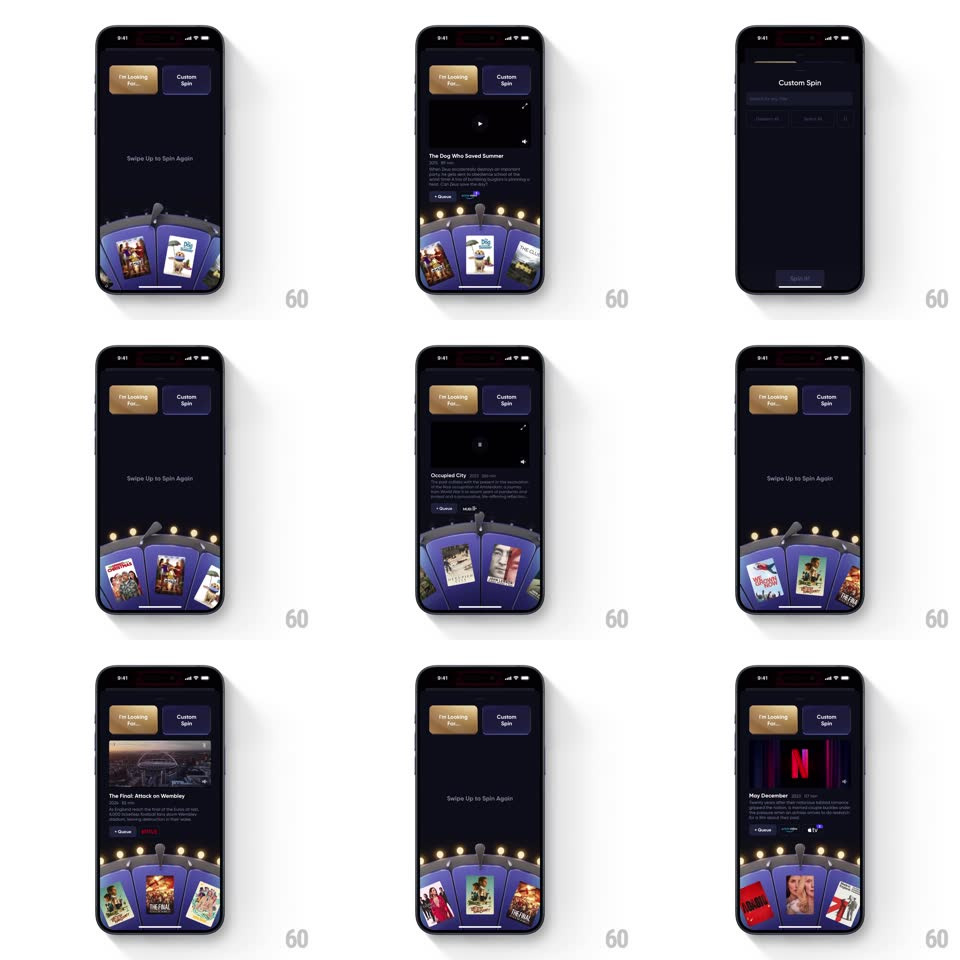

Media
Frame-by-frame

Rebuild this interaction 1:1: Queue's spin wheel - swiping up on the skeuomorphic poster wheel spins it with momentum; when it settles on a title, a video preview card rises above the wheel with the trailer, meta, and "+ Queue" actions.

Rebuild this interaction 1:1: Queue's spin wheel - swiping up on the skeuomorphic poster wheel spins it with momentum; when it settles on a title, a video preview card rises above the wheel with the trailer, meta, and "+ Queue" actions.
## Integration
Integration: stack-agnostic spec - springs given as stiffness/damping, timed motions as duration + curve; map every value to your framework and animation library of choice.
## Scene
Dark screen: "I'm Looking For..." and "Custom Spin" pills at top, helper text ("Swipe Up to Spin Again" / "Selecting from I'm Looking For..."), and a half-visible wheel at the bottom - lit bulbs around its rim, movie posters mounted on its faces, a pointer notch at top-center. Result state: a preview card with video, title, synopsis, and service buttons (Netflix, Apple TV).
## Motion spec
Pattern: momentum spin-wheel, gesture-driven.
- Swipe: the wheel rotates with the flick's velocity (friction ~0.96/frame), posters traveling around the drum, bulbs chasing a light wave while spinning (100ms cycle).
- Settle: the wheel eases to rest with the selected poster centered at the pointer (spring ~200/20, one small overshoot and return) with a tick haptic per face.
- Reveal: the preview card rises from behind the wheel (spring ~340/24, 400ms), its video area fading in (+150ms); the helper text crossfades to the title treatment.
- Re-spin: swiping up dismisses the card down (250ms) and spins again in one gesture chain.
## Calibration
- The wheel always stops face-centered, never between posters.
- The card belongs to the settled poster - no mismatch between wheel and preview.
## Reduced motion
The wheel fades between faces (200ms each) and settles without overshoot.
## Don't miss
- The bulbs chase only while the wheel moves - a static wheel has steady bulbs.
- The pointer notch is fixed; the wheel moves under it.